No Electron. Really.
rumd is a single native binary built in pure Rust. No bundled browser, no runtime, none of the gigabytes.

rumdrumd renders your markdown live — in a clean reading view or side by side with its source — and refreshes automatically when the file changes on disk.
Linux · macOS · Windows — a single native binary

rumd is a single native binary built in pure Rust. No bundled browser, no runtime, none of the gigabytes.
A native egui app that starts fast and sips memory while it does its one job well.
No accounts, no telemetry. Your documents never leave your machine.
If the file changes on disk while you have unsaved edits, rumd asks. Reloading never clobbers your work.
Headless UI tests run on every platform without a display server, so quality doesn't depend on someone clicking around.
Drag and drop, the file dialog, or straight from the shell:
rumd README.md
GFM tables, task lists, strikethrough, syntax-highlighted code blocks, clickable links, and local images resolved relative to the document.
Rendered and source side by side. The source pane is always
editable and the rendered pane follows as you type — save with
Ctrl/Cmd+S. Unsaved changes show a • in the
window title.
Every visible occurrence highlighted in both views at once. Enter and Shift+Enter step through matches.
Follows your system theme by default; toggle any time with Ctrl/Cmd+D.
Zoom in, out, and reset with the usual keys — and it persists.
Theme, zoom, and view mode are restored the next time you open rumd.
Refreshes automatically when the file changes on disk — degrades to manual refresh if the OS watch limit is hit.
Line numbers and markdown highlighting. Files that aren't valid UTF-8 stay read-only, so rumd can never corrupt them.


| Shortcut | Action |
|---|---|
| Ctrl/Cmd+O | Open file |
| Ctrl/Cmd+S | Save edits |
| Ctrl/Cmd+E | Cycle rendered/split/source |
| Ctrl/Cmd+D | Toggle dark/light theme |
| Ctrl/Cmd+F | Search |
| Enter / Shift+Enter | Next / previous match |
| Esc | Close search |
| Ctrl/Cmd+= / Ctrl/Cmd+- / Ctrl/Cmd+0 | Zoom in / out / reset |
| F5 | Reload from disk (asks first if there are unsaved edits) |
rumd is built from source with a recent stable Rust toolchain (1.95 or newer).
sudo apt install libxkbcommon-dev libwayland-dev libx11-devgit clone https://github.com/TODO-rumd/rumd.git
cd rumd
cargo build --release./target/release/rumd README.md